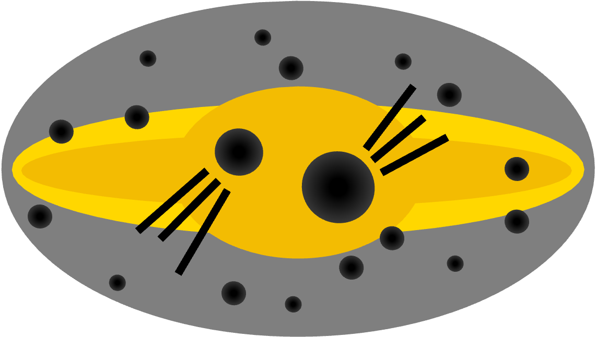

Charting the Galactic Underworld
The kinematics, rates, and demographics of Milky Way black holes
Wagg et al. 2026
Welcome! You've found the spot for exploring some of the results from our paper charting the "Galactic Underworld" of black holes (BHs) scattered throughout the Milky Way.
What did we do? We used cogsworth to simulate the entire population of Milky Way black holes, self-consistently accounting for their binary evolution and their trajectories through the Galactic potential. We repeated the simulation for ~30 variations of the binary physics, supernova physics, and Galactic potential.
What did we find? For our fiducial model, we predict that ~$1.7\times 10^8$ BHs have formed in the Milky Way, the vast majority of which are now isolated and ~3% have escaped the Galaxy. Most of the ~$10^7$ BHs in binaries have another BH or a white dwarf companion, but ~$10^5$ retain a luminous stellar companion. BHs are distributed more diffusely than visible stars, with a scale height around ~2.5x larger. BH masses correlate with present-day location: the most massive BHs are preferentially close to the Galactic plane. This correlation is especially strong for BH-star binaries, which separate into tight, low-mass post-common-envelope systems and wide, high-mass non-interacting ones. The BH mass distribution and kinematics are highly sensitive to the remnant mass prescription and natal kick model, so observations could constrain explodability criteria and BH kicks. Accounting for the time-evolution of the Galactic potential more than doubles the escape fraction and increases the bound population's scale height by ~20%, whilst neglecting binary interactions overestimates it by 30%.
Why is this important? With upcoming data from Roman, Gaia DR4, and spectroscopic surveys, we will soon have an unprecedented dataset of Milky Way black holes (BHs) to constrain their formation and evolution in a complementary manner to gravitational-wave observations. Our work builds a foundation for interpreting these observations and connecting them to the underlying physics of stellar evolution, supernovae, and binary interactions.
How can I use this page? TODO
Total or stacked?
Include Milky Way escapees?
Normalisation
$y$-axis scale
Model variation
Start with the fiducial model in "Total" view, then click "Split by channel" to see how each black hole ended up isolated (or in a binary). Click the dropdowns for a guided tour.
Every black hole is born in a binary in our simulations, but ends up in one of three states by present day:
Isolated (disruption) — the supernova natal kick disrupted the binary, ejecting the BH. This is the most common outcome.
Isolated (merger) — the two stars merged before either reached core collapse, leaving a single object that later formed a BH.
Binary at present day — the BH is still bound to a companion (another compact object or a star).
Massive black holes get weaker kicks! In the fiducial model we scale natal kicks by the fraction of ejecta that falls back onto the collapsing core. High-mass BHs have more fallback, so their kicks are weak and they rarely disrupt their binaries. Switch to "Log" scale and "Split by channel" to see the high-mass tail become dominated by binaries and merger products.
It selects black holes by their distance from the Galactic plane. Set a tight upper limit (say |z| < 1 kpc) and you'll see the distribution shift to higher masses — massive BHs stay near the plane. Open it up to large |z| and the low-mass, strongly-kicked BHs reappear.
A small fraction of BHs escape the Milky Way entirely. These are almost all low-mass BHs that received the strongest natal kicks. Switch to "Escaped" to see just this free-floating population — note how it skews to low masses compared to the bound population.
The buttons beside the plot switch between ~30 variations of the physics, grouped by category. A few highlights:
The mapping from a star's core to its final black hole mass is highly uncertain. Compare the fiducial (delayed) prescription with "Maltsev+2025" or "Fryer+2012 Rapid" — both the shape of the distribution and the total number of BHs change dramatically.
Try "No BH kicks" (BHs stay near the plane, almost none escape) versus "No fallback rescaling" (every BH gets a full kick, the escape fraction soars). Combine with the |z| slider and the escaped filter to see the effect directly.
For the full story, check out Sections 3 & 4 of the paper :)
Well, oh boy do I have a paper for you 🙃 Use the button below to go and read the full paper in detail!
Read the paper